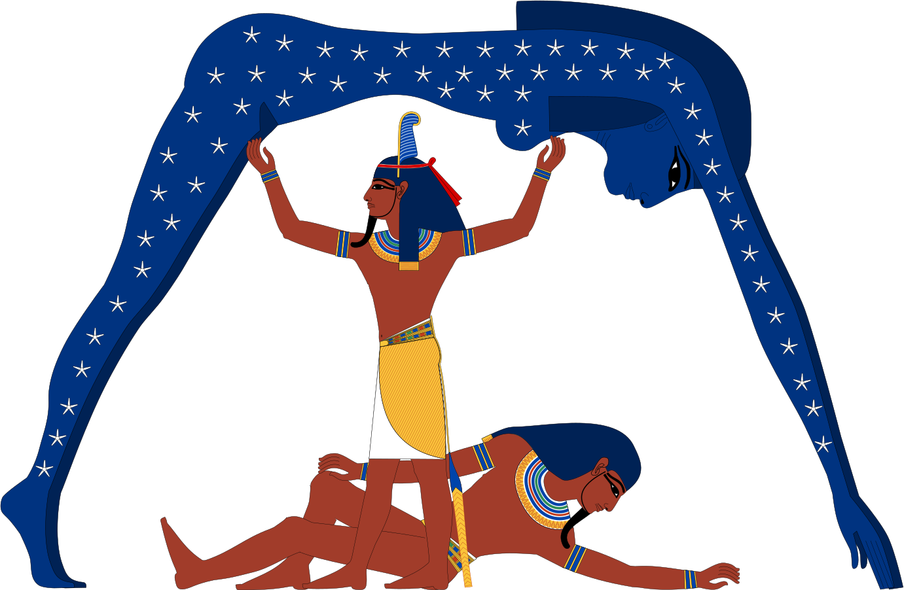

Throughout history, humankind has sought to explain and picture the origin of the world: the moment when Creation takes shape and gives birth to people, animals, plants, every living thing, water, land and so on. The ancient Egyptians were no exception.
A cosmogony is a set of mythical accounts describing the creation of the world
(from the Greek kosmos, "world", and gonos, "birth"). Egypt did not have one cosmogony
but several, the main ones being those of Heliopolis, Memphis and Hermopolis.
Each of them
has its own creation story and features a main god,
or demiurge, the god of the city in question. The demiurge is the Creator of the world, the deity
responsible for bringing the universe into being; the word comes from the Greek demiourgos, meaning craftsman
or maker. In Egypt, every cosmogony has its
own demiurge.
The most widespread cosmogony is that of Heliopolis, whose creator is a solar demiurge
(Re in one of his forms) and which sets out a divine genealogy descending all the way to the pharaonic god Horus.